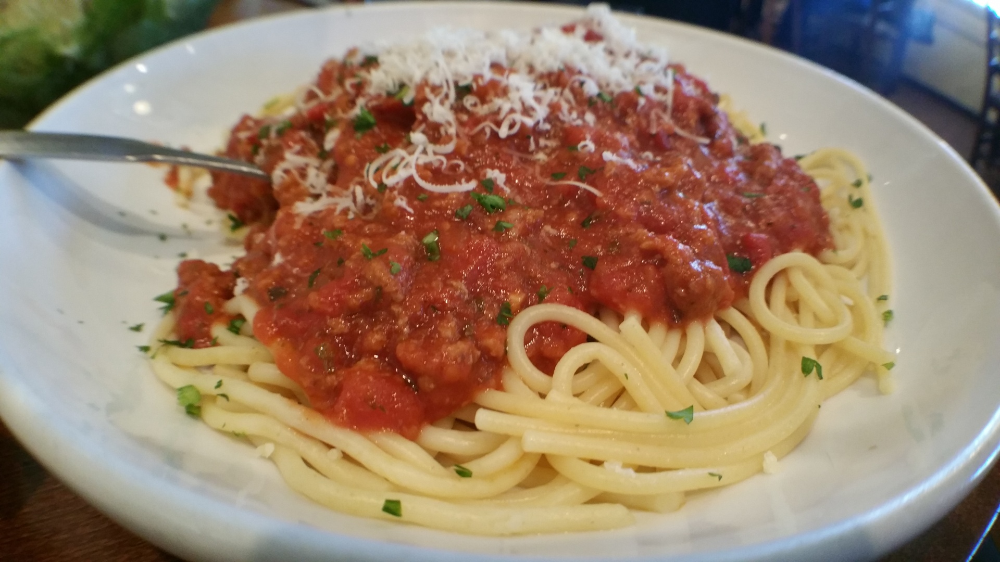

Spaghetti

Description
Spaghetti with meat sauce is an all-time classic meal. With just a few ingredients,
and a short preparation time, you can have this hearty, wholesome meal ready for your
family in a flash and spend more time enjoying the meal with your family than in the
kitchen cooking! So grab a large pot and a large pan, and we'll get
started.
Ingredients
- 1-2 package spaghetti noodles
- 1-2 jars marinara sauce
- 1 lb. ground beef
Steps
- Bring 4 quarts of water to a boil in your large pot. Add a dash of salt.
- Bring your large pan to medium heat, add your 1 lb. of ground beef and brown, stirring occassionally to avoid burning.
- Add your 1-2 packages of spaghetti noodes to boiling water. Set a timer for 2-3 minutes. Don't overcook! Stir occasionally to avoid clumping. Carefully take out a noodle after 2 minutes to test doneness.
- Drain excess fat from browned ground beef, then add your 1-2 jars of marinara sauce to the drained beef to warm.
- Strain your cooked spaghetti noodles and return to large pot.
- That's it! You've got your spaghetti noodles cooked and your meat sauce prepared. You can mix the sauce and noodles together, or dish individually - your choice!